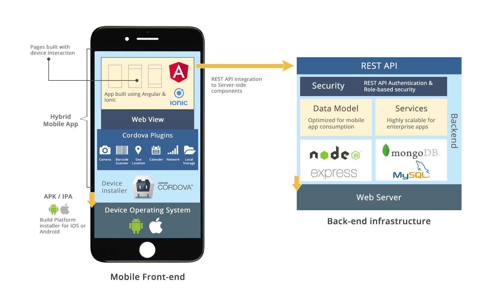

<!doctype html>
<html lang="en">
    <head>
        <meta charset="utf-8">
        <meta name="viewport" content="width=device-width, initial-scale=1.0, maximum-scale=1.0, user-scalable=no">

        <title>Introdução ao IONIC - Andrew Ribeiro</title>
        <link rel="stylesheet" href="./css/reveal.css">
        <link rel="stylesheet" href="./css/theme/blood.css" id="theme">
        <link rel="stylesheet" href="./css/highlight/zenburn.css">
        <link rel="stylesheet" href="./css/print/paper.css" type="text/css" media="print">
          <link rel="stylesheet" href="./_assets/custom.css">


    </head>
    <body>

        <div class="reveal">
            <div class="slides"><section  data-markdown><script type="text/template">


### Introdução ao IONIC

Autor: Andrew Ribeiro
</script></section><section  data-markdown><script type="text/template">### Plano de Aula
- O que é IONIC?
- História
- Arquitetura
- Como funciona
- Exemplos
</script></section><section ><section data-markdown><script type="text/template">
### O que é IONIC?


</script></section><section data-markdown><script type="text/template"><!-- .slide: data-background="assets/iphone-smartphone.jpeg"-->
## Um framework de desenvolvimento mobile
</script></section><section data-markdown><script type="text/template"><!-- .slide: data-background="assets/iphone-smartphone.jpeg"-->

**De acordo com documentação oficial**
> _Ionic Framework é um kit de desenvolvimento open source para a criação de aplicações mobile e desktop performaticas e de alta-qualidade usando tecnologias web (HTML, CSS, and JavaScript)._
</script></section></section><section ><section data-markdown><script type="text/template">
### História

</script></section><section data-markdown><script type="text/template"><!-- .slide: data-background="assets/drifty.jpg" -->
#### Criada em 2013 pela empresa ***Drifty***.

<div style="display:flex;align-items: center; justify-content: center;"> &nbsp;Codiqa</div> <!-- .element: class="fragment" -->
<div style="display:flex;align-items: center; justify-content: center;">&nbsp;Jetstrap</div> <!-- .element: class="fragment" -->
</script></section><section data-markdown><script type="text/template">
<!-- .slide: data-background-video="assets/codiqa.webm" -->


## CODIQA
</script></section><section data-markdown><script type="text/template">
<!-- .slide: data-background-video="assets/jetstrap.webm" -->


## JETSTRAP
</script></section><section data-markdown><script type="text/template">
<!-- .slide: data-background="assets/customers.jpg" -->

### Feedback de clientes
</script></section><section data-markdown><script type="text/template">
<!-- .slide: data-background="assets/ionic_2013.png" -->

Em Novembro de 2013 a versão Alpha foi lançada. <!-- .element: class="fragment" -->

Em Março de 2014, saiu a versão Beta 1.0. <!-- .element: class="fragment" -->

Em Maio de 2015, versão final 1.0. <!-- .element: class="fragment" -->

Em 2016, diversos lançamentos da versão 2.0. <!-- .element: class="fragment" -->

<h4>Em 2015, mais de <span>1.5M</span><!-- .element: class="fragment highlight-blue" --> de apps publicados com IONIC.</h4> <!-- .element: class="fragment" -->
</script></section><section data-markdown><script type="text/template">
<!-- .slide: data-background="assets/ionic_2013.png" -->

Janeiro de 2019

## IONIC 4
</script></section></section><section ><section data-markdown><script type="text/template">
### Arquitetura


</script></section><section data-markdown><script type="text/template">

</script></section><section data-markdown><script type="text/template">

</script></section></section><section  data-markdown><script type="text/template">
### Como funciona?


</script></section></div>
        </div>

        <script src="./lib/js/head.min.js"></script>
        <script src="./js/reveal.js"></script>

        <script>
            function extend() {
              var target = {};
              for (var i = 0; i < arguments.length; i++) {
                var source = arguments[i];
                for (var key in source) {
                  if (source.hasOwnProperty(key)) {
                    target[key] = source[key];
                  }
                }
              }
              return target;
            }

            // Optional libraries used to extend on reveal.js
            var deps = [
              { src: './lib/js/classList.js', condition: function() { return !document.body.classList; } },
              { src: './plugin/markdown/marked.js', condition: function() { return !!document.querySelector('[data-markdown]'); } },
              { src: './plugin/markdown/markdown.js', condition: function() { return !!document.querySelector('[data-markdown]'); } },
              { src: './plugin/highlight/highlight.js', async: true, callback: function() { hljs.initHighlightingOnLoad(); } },
              { src: './plugin/zoom-js/zoom.js', async: true },
              { src: './plugin/notes/notes.js', async: true },
              { src: './plugin/math/math.js', async: true }
            ];

            // default options to init reveal.js
            var defaultOptions = {
              controls: true,
              progress: true,
              history: true,
              center: true,
              transition: 'default', // none/fade/slide/convex/concave/zoom
              dependencies: deps
            };

            // options from URL query string
            var queryOptions = Reveal.getQueryHash() || {};

            var options = {"transition":"slide"};
            options = extend(defaultOptions, options, queryOptions);
        </script>


        <script>
          Reveal.initialize(options);
        </script>
    </body>
</html>
